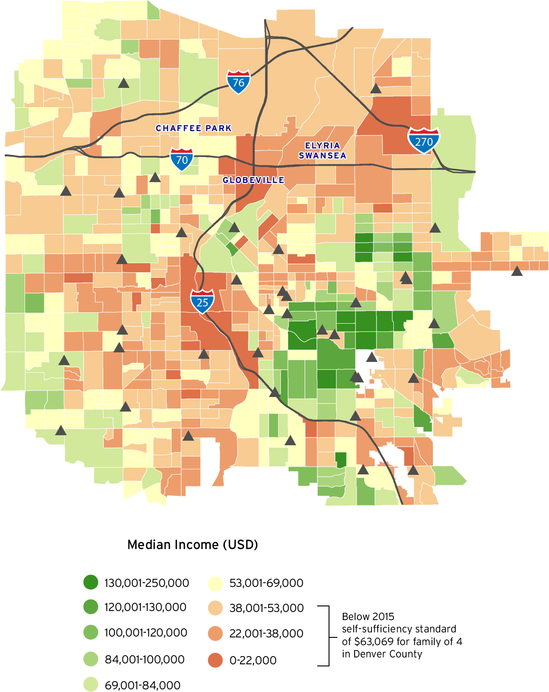
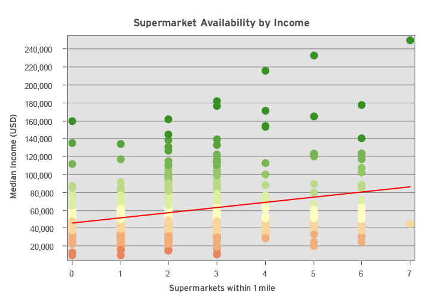

Food Security Minisite
According to the U.S. Department of Agriculture, food deserts are neighborhoods where at least 33% of the population in an urban census tract lives more than one half mile from a supermarket. I worked with local organizations addressing food insecurity to identify a need for visuals illustrating the severity of food insufficiency and the demographic factors tied to that inequality. Fatuma at Groundwork Denver sums up this need well:
“[Food deserts] are ubiquitious and institutionalized. Food is such a personalized thing and...we are always telling people to change their eating habits. It’s helpful to them to see that this isn’t just happening in their neighborhood – this is happening to their Latino brothers and sisters in Chicago, too. It’s other communities that look like them and are dealing with the same problems. This matters on both sides of the issue. Policy makers need to see visuals showing the common indicators of this institutional problem.”
I decided to create those visuals. Here is an interactive visualization of the Denver area allows users to toggle on and off demographic features that are common for food deserts.
This map shows median incomes in the Denver area and supermarket locations. The three labelled neighborhoods are particularly distant from supermarkets and many in these communities struggle financially. I met with two organizations that work to supply fresh produce and food education to residents. Both Groundwork Denver and The Growhaus focus on amplifying the voices of these neighborhoods and making health and well-being a possibility for all.
Here is an inset highlighting that significant food desert. Obtaining healthy food in this region can be difficult, and residents often turn to convenience stores for a closer food source. This leads to health problems and perpetuates the cycle of poverty.

A linear regression comparing median income by block group with number of supermarkets within 1 mile of a block group finds that, on average, a household making $45,482 can expect zero supermarkets within one mile of their house.
This project was completed as part of a Capstone course at Inworks, a Human-Centered Design school at CU Denver. You can find more information about the project and methodology here , or more about food deserts here.